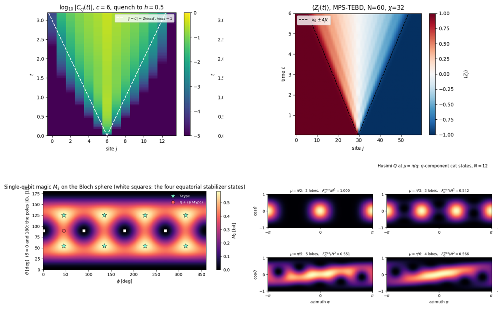

From a Single Spin to Quantum Machine Learning
Hands-on lectures on simulating quantum systems in JAX, from scratch
Starting from an empty Python file, the lectures develop a matrix-free simulation engine and use it to study spin-1/2 systems, quantum circuits, unitary and dissipative dynamics, and quantum machine learning.

Preface
Quantum many-body physics and quantum computing share one computational object: the state of many interacting two-level systems. Whether the two levels are the spin of an electron, two internal states of a trapped ion or the qubit of a superconducting processor, the state of \(N\) of them is a vector of \(2^N\) complex amplitudes, and every simulation is a sequence of operations on that vector. These lectures build, starting from an empty Python file, a complete simulation engine for such systems, SmoQ.jax, a matrix-free JAX engine for quantum many-body systems, and then use it to study their physics.
The simulator is written in JAX and grows chapter by chapter. It stores the state of \(N\) spins-1/2 as a rank-\(N\) tensor and applies every operator, whether a gate, a Hamiltonian term, a Kraus operator or a projector, through a single einsum contraction, so the \(2^N\times 2^N\) matrix of textbook treatments is never formed. Because the whole simulator is differentiable, the same code that evolves a spin chain also trains a quantum circuit, which makes it a natural laboratory for quantum machine learning. On this one primitive the notes construct a fully functional toolbox:
Spin-1/2 many-body physics
Hamiltonians on arbitrary graphs, exact diagonalisation and matrix-free Lanczos, symmetries, entanglement, phase diagrams and quantum phase transitions.
Chapters: 2 · Quantum many-body spin systems with dense matrices · 5 · Ground states and unitary dynamics · 13 · Quantum phase transitions
Unitary dynamics
Exact propagation, Runge–Kutta, Trotter–Suzuki, Chebyshev and Krylov integrators, compared on accuracy and cost, and applied to quantum quenches and light cones.
Chapters: 5 · Ground states and unitary dynamics
Dissipative dynamics
The Lindblad master equation on the density tensor and its unravelling into quantum trajectories, with noise channels and decoherence of entangled states.
Chapters: 6 · Open quantum systems · 3 · The matrix-free engine
Quantum circuits
Gates as exponentials of Pauli operators, circuits as compiled lists of contractions, measurement, feed-forward, random circuits, and protocols such as teleportation.
Chapters: 4 · Digital quantum circuits · 8 · Quantum information protocols
Quantum machine learning
Parametrised circuits trained with gradients from the parameter-shift rule and from automatic differentiation, optimisers, the variational eigensolver, quantum autoencoders, training under shot noise and gate noise, and quantum reservoir computing, where many-body dynamics processes time series.
Chapters: 11 · Variational quantum circuits · 12 · Quantum reservoir computing
Quantum communication and cryptography
From Shannon entropy, channel capacity and the one-time pad to what quantum mechanics changes: no-cloning, information versus disturbance, quantum channels and their capacities, quantum key distribution simulated end to end, and noisy entanglement made useful by distillation, repeaters and certification.
Beyond the state vector
Matrix product states with DMRG and TEBD for chains far longer than a state vector can hold, and diagnostics of entanglement, magic and metrological usefulness.
Chapters: 7 · Tensor networks · 9 · Entanglement and complexity diagnostics · 10 · Quantum metrology protocols
On first contact, these methods are usually met as black boxes inside large libraries. Writing the simulator oneself shows what such a library takes care of: how the ordering of the qubits fixes every index, why a time step is stable or unstable, what an algorithm costs and where its error comes from. Every derivation in the notes is carried out explicitly, every algorithm is validated against an exact or independent result, and the code is written to be read, with documented functions and with the JAX tools introduced where they are first needed: compiled loops (jit, lax.scan), batching (vmap) and automatic differentiation (grad). The notes therefore teach three things together: the physics, the numerical methods, and the practice of writing scientific code that is both fast and correct.
Quantum machine learning
The differentiable simulator is used throughout Chapters 11 and 12 to build and train quantum machine-learning models, each derived, implemented and tested against exact results:
- Parametrised quantum circuits and four ways to compute their gradients (notebook 40)
- Optimisers for variational circuits, from gradient descent to the quantum natural gradient (notebook 41)
- The variational quantum eigensolver for ground states of spin chains (notebook 42)
- The measurement cost of a variational algorithm, with classical shadows in the training loop (notebook 43)
- Training under gate noise: cost landscapes, noise-induced barren plateaus and error mitigation (notebook 44)
- The quantum autoencoder, compressing quantum data with a variational circuit (notebook 45)
- Quantum reservoir computing, many-body dynamics as a machine for time-series prediction (notebook 46)
Quantum communication and cryptography
Chapter 14 builds the classical toolbox of communication and secrecy first and then shows, step by step and in simulation, what quantum mechanics adds:
- Information and noisy channels: entropy, capacity and error correction (notebook 50)
- Secrecy: the one-time pad, key distribution, authentication and privacy amplification (notebook 51)
- What quantum mechanics changes: no-cloning, disturbance, quantum channels and capacities (notebook 52)
- Quantum key distribution: BB84 end to end and the secret-key rate (notebook 53)
- Noisy entanglement as a resource: distillation, repeaters and certification (notebook 54)
Start here
The engine fits in one file, quantum_engine.py; notebook 08b, Building the quantum simulator engine, explains every function in it with its mathematics and an independent check. Every capability above is a few lines of code on top of it. The snippet below prepares and samples a GHZ state, finds the ground state of a Heisenberg chain of sixteen spins, lets a Néel state melt under the same Hamiltonian, drives a decaying qubit with the Lindblad equation, and differentiates the energy of a variational circuit with respect to all its angles. It runs in about a minute or less on a laptop CPU (python examples/starter.py) and prints one labelled line per part; the notes explain every function it uses, starting from nothing.
import jax, jax.numpy as jnp
from quantum_engine import * # the simulator built in the notes
key = jax.random.PRNGKey(0)
# 1. Quantum circuit: a three-qubit GHZ state, sampled
psi = zero_state(3) # rank-3 tensor of shape (2, 2, 2)
psi = apply_gate(psi, H, (0,))
psi = apply_gate(psi, CNOT, (0, 1))
psi = apply_gate(psi, CNOT, (1, 2))
bits = sample_bitstrings(key, psi, shots=6)
print("GHZ samples:", bits.tolist()) # only 000 and 111
# 2. Many-body physics: Heisenberg chain of 16 spins, Lanczos
N = 16
H_xxx = heisenberg_terms(N) # local terms, no 2^N x 2^N matrix
E0, gs = lanczos_ground_state(H_xxx, N)
S_half = entanglement_entropy(gs, list(range(N // 2)))
print(f"E0 = {E0:.6f}, half-chain entropy = {S_half:.4f} bits")
# 3. Unitary dynamics: a Neel state melts (2nd-order TEBD)
neel = product_state("01" * (N // 2))
psi_t, z0 = tebd_evolve(neel, H_xxx, dt=0.05, n_steps=40,
observe=lambda p: expect_local(p, Z, (0,)))
print("<Z_0>(t) every 10 steps:", [round(float(z), 3) for z in z0[::10]])
# 4. Dissipative dynamics: driven, decaying qubit (Lindblad)
rho = to_dm(zero_state(1))
drive = [((0,), 0.5 * X)]
decay = [((0,), SP, 0.2)] # decay |1> -> |0>: jump operator |0><1| = sigma^+, rate 0.2
for _ in range(200):
rho = lindblad_rk4_step(rho, drive, decay, dt=0.05)
print(f"excited population at t = 10: {dm_matrix(rho)[1, 1].real:.4f}")
# 5. Variational circuit: energy gradient by autodiff
n, layers = 4, 2
H4 = heisenberg_terms(n)
cost = lambda th: energy(H4, hardware_efficient_ansatz(th, n, layers))
theta = 0.1 * jax.random.normal(key, (hea_num_params(n, layers),))
g = jax.grad(cost)(theta)
print(f"energy = {cost(theta):.4f}, gradient has {g.size} components")Where to go next.
- First contact with numerics: notebooks 00a, 00b, 49, 01 and 02 (Chapter 1), then Chapter 2.
- Comfortable with quantum mechanics and Python: start at Chapter 3, where the engine is built, and continue in order.
- Interested in quantum information: after Chapter 3, go to Chapter 4 and Chapter 8.
- Interested in quantum technologies: Chapter 10 on metrology and Chapter 11 on variational circuits build on Chapters 3–5.
- Interested in quantum machine learning: after Chapters 3–5, Chapter 11 (variational circuits, the variational eigensolver, quantum autoencoders) and Chapter 12 (quantum reservoir computing).
Chapters
14 chapters, each a short overview page followed by runnable notebooks (64 in total). The notebooks are numbered globally; each one carries the engine functions it uses in a folded Engine recap cell and ends with exercises, so any notebook also runs and can be studied on its own.
Simulate a single quantum particle on a grid and write fast, batched, differentiable array code.
7 notebooks
2 · Quantum many-body spin systems with dense matrices
Build spin-chain Hamiltonians as dense matrices, diagonalise them and evolve states in time.
2 notebooks

Act on a many-body state with einsum, and compute observables, entanglement, channels and measurements.
5 notebooks
Write quantum circuits as lists of einsum contractions and sample random unitaries and circuits.
2 notebooks
5 · Ground states and unitary dynamics
Find ground states with Lanczos and propagate states with Trotter, Chebyshev and Krylov methods.
5 notebooks
Simulate open quantum systems with the Lindblad equation and with quantum trajectories.
2 notebooks
Represent one-dimensional states as matrix product states and run DMRG and TEBD on them.
1 notebook
8 · Quantum information protocols
Simulate the standard quantum-information protocols end to end, with sampling and noise.
6 notebooks
9 · Entanglement and complexity diagnostics
Quantify mixed-state entanglement, multipartite correlations, magic and circuit complexity.
5 notebooks
10 · Quantum metrology protocols
Compute quantum Fisher information and simulate metrology protocols from preparation to estimation.
11 notebooks
11 · Variational quantum circuits
Train parametrised quantum circuits: gradients, optimisers, VQE, measurement cost and noise.
11 notebooks
12 · Quantum reservoir computing
Use driven many-body dynamics as a trainable machine for time-series prediction.
1 notebook
13 · Quantum phase transitions
Locate a quantum phase transition numerically from finite chains and finite-size scaling.
1 notebook
14 · Quantum communication and cryptography
Simulate how information is sent reliably and kept secret, from Shannon’s noisy channels to quantum key distribution with noisy entanglement.
5 notebooks
Getting started
pip install -r requirements.txt # jax, numpy, scipy, matplotlib, jupyter
python examples/starter.py # the snippet above
jupyter lab # open any notebook in the ch*/ foldersThe configuration cell at the top of every notebook selects the device (CPU or GPU) and the precision (single or double). Everything runs on a laptop CPU.
Who this is for
Students who have taken one semester of quantum mechanics and a first Python course, and anyone who wants to learn how many-body quantum simulations are written in practice. Every derivation is carried out step by step, and every result is checked numerically.
How to cite
M. Płodzień, Quantum Many-Body Simulation: from a single spin to quantum machine learning, hands-on lectures in JAX with the SmoQ.jax engine (2026), https://marcinplodzien.github.io/quantum-many-body-simulation/